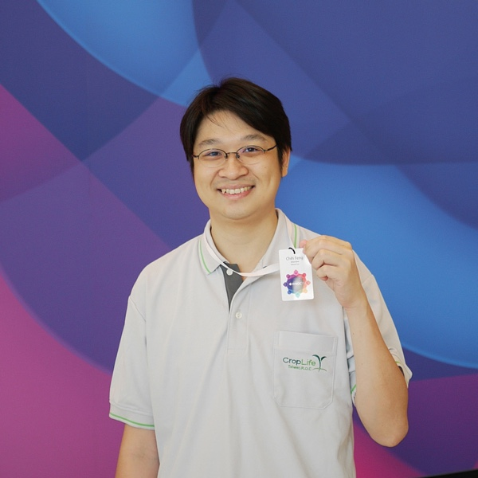

-
DAY 1
10/29 (六)
-
DAY 2
10/30 (日)
-
08: 30
報到
-
09: 00
開幕
-
09: 15
翟本喬（Ben Jai）
- 行動裝置科技趨勢
- 主廳（R1）/ 全廳聯播
議題介紹
Gartner 等各大市場分析公司每年都會推出許多新科技趨勢的預測。其中很多其實不怎麼新，很多其實不怎麼有前途，很多其實有前途但你追不上。我們要怎麼觀察並找出自己的路呢？
講者介紹
紐約大學電腦科學博士，曾任職貝爾實驗室與 Google，之後創立台達電子雲端技術中心，2013 年帶領資訊菁英成立和沛科技，提供企業完整的雲端解決方案，2016 年成立和沛移動，開創使用者完美的雲端服務行動體驗。
-
10: 00
休息
-
10: 15
古宗禎（Denny Ku）
- 天眼通通 Serverless
- 主廳（R1）

議題介紹
1. 求職天眼通的開發歷程
2. Serverless 技術的運用與問題
3. GUI 開發技術的選擇：React + Redux + (Redux Saga)講者介紹
喜歡前端、Serverless，最近也迷上了自然語言處理。 I'm a false positive front-end engineer.
-
10: 15
羅志達（Kelvin Lo）
- Unity 次世代運算與 VR 開發
- 二廳（R2）

議題介紹
VR 正在如火如荼的發展，但對於消費者而言 VR 的應用必須是直逼真實環境的 VR 才能接受，本次的內容主要說明 Unity 在即時運算技術上如何規避效能障礙達到 AAA 等級的即時運算方向與門檻，並帶來一些案例分享。
講者介紹
作為一個 Unity 原廠講師，Kelvin 致力於將 Unity 開發技術有效的傳達給開發者。待過遊戲研發 13 年，同時也是個資深玩家的他，認為台灣開發者最大問題並非技術，更多是需要出來交流。他很樂意協助台灣開發者，在遇到問題除了 Google 之外，能有更多管道解決。
-
10: 15
Nevin Chen
- Kotlin on Android development
- 三廳（R3）

議題介紹
Kotlin solves some issues in Java 6/7 on Android. Although java 8 is now partially supported, Kotlin still provides a lot of value when developing Android applications. In this talk I'll share my personal experience wirting my production app in kotlin
1. Kotlin overview
2. Kotlin on Android
3. Personal Experience講者介紹
爸爸, 碼農 熱愛 Mobile 開發
-
11: 00
休息
-
11: 15
趙永弘
- 佈局雲端，提升企業「速度」、「彈性」、「標準化」
- 主廳（R1）

議題介紹
應用雲端服務，可協助企業升級。從程式開發、數據管理、IT 整合、行動應用，乃至於客戶端，雲端能夠提升商務速度，提高彈性，打造標準化平台。掌握三大方向，開創未來雲端商機。1、快速彈性：為了擴展商業價值佈局雲端，選擇平台時，應注重彈性、快速擴充性與相容性，以最低成本創新最大效益。2、便捷易用：簡易管理、快速部署，創造零時差協作環境，使資料能有效的應用，提升作業效率及員工產能。3、創造未來：將 IT 資源投注於雲端資源使用及數據分析，挖掘未來創新商業模式的可能性。
講者介紹
擔任捕夢網數位科技 CTO 技術長。熟悉雲端運算技術 & 雲端未來發展，破除企業對於雲端不實的幻夢，以穩健踏實的方式，輔導眾多企業從傳統 IT 躍升雲端未來。在企業 IT 轉變與成長的過程，扮演了在背後提供了許多技術及硬體奧援的角色。
-
11: 15
謝京蓓（Cori Shieh）
- VR / AR 全球趨勢與商機剖析
- 二廳（R2）

議題介紹
2016 年被產業、媒體稱為 VR 元年，各類 VR / AR 硬體、內容及應用如春筍般蓬勃冒出。在歐美、中國等主流市場，大量的 VR / AR 科技於各產業 / 領域中產生加值與轉型的作用。本次演講將帶領大家從 VR / AR 全球市場以及各領域間應用案例之角度了解目前的應用趨勢，同時也會探討台灣 VR / AR 業者發展的現況以及面對的挑戰、未來發展利基。
講者介紹
Cori 是台灣 VR/AR 產業前瞻推手，產業人稱「VR 教母」。2016 年 Cori 推動「TAVAR 台灣虛擬及擴增實境產業協會」成立，目前擔任協會秘書長，致力推動產業生態圈發展。Cori 也創辦喜杰思互動科技公司，專注連結台灣與中國、矽谷行業資源，協助台灣業者走向國際。
-
11: 15
吳仁弘（Rick Wu）
- 來玩 Android 執行緒
- 三廳（R3）

議題介紹
Android App 的開發是以 Java 語言為基礎的。 要讓 App 流暢就得依賴多執行緒的實作，而當 Java 的多執行緒概念揉合進 Android 的生命週期時，會有額外需注意的事項與限制。 初學者一開始很容易被一大堆工具以及術語嚇到，但若能先對這些工具及專有名詞有個初步的認識，便能夠在理解程式碼的情況下撰寫程序，進而寫出有良好使用者體驗的 App。
講者介紹
三竹資訊出包工程師
透過不斷的出包來攝取經驗值
對於買書有莫名的熱愛
專長是與別人交流書單
在網路上撰寫部落格，來達到誤人子弟的效果（？） -
12: 00
午餐
-
13: 00
Sponsor Talk
-
13: 45
休息
-
14: 00
蔡一郎（Yi-Lang Tsai）
- 在雲霧漂渺之間談物聯網安全
- 主廳（R1）

議題介紹
物聯網與行動應用已成為未來發展的主要趨勢，結合雲端服務更形成了一個龐大的資訊網路，傳統資訊架構面對新型態行動應用服務時，都面臨了不得不進行的改變，行動裝置配合 App 成了第一波物聯網世代的應用場域，隨著裝置的多樣化與即時資訊處理的需求，即將來臨的霧運算（Fog Computing）時代，加速了行動應用但也帶來新的資安問題，如何兼顧物聯網的安全成為未來重要的關注議題。
講者介紹
目前為台灣安全聯盟理事長，並服務於國家高速網路與計算中心，亦為 The Honeynet
Project 台灣分會負責人、TWCSIRT 團隊負責人，熟悉資訊安全領域技術，涵蓋系統安全、網路安全、管理制度、資訊探勘與數位鑑識等領域，目前已有 34 本電腦資訊圖書著作。 -
14: 00
宋志峰（Anistar）
- Yahoo 開源開發套件 AppDevKit - 開發秘辛與功能分享
- 二廳（R2）
議題介紹
AppDevKit 是專注輔助 iOS App 的開發者套件，提供超過 100 以上功能；五大模組中包含基本核心，使用者介面，動畫，影像與列表強化，開發者可獨立使用部份功能，採用 BSD 授權，支援商業使用。
過去 3 年，台灣雅虎團隊已經使用 AppDevKit 開發許多產品，也利用該套件協助加強軟體功能與穩定性，並解決了 iOS 平台版本與設備的相容性問題，讓開發者能透過 AppDevKit 輕易完成複雜的任務，保持軟體開發的一致性與維護的方便性。
這場 Session 將分享開發開源套件的技巧與如何使用 AppDevKit 來快速完成 iOS App 開發。講者介紹
目前現職服務於雅虎奇摩，負責帶領超級商城與拍賣 APP 開發，
專注在專案軟體架構規劃與開發，熱愛分享自己的經驗。
具備 10 年以上的專案開發經驗，
7 年的專業講師資歷，
開發的 Magic Shutter 曾獲得 NewYork Times 推薦最佳前十大攝影軟體推薦。 -
14: 00
吳承翰
- HackMD - Markdown 協作筆記
- 三廳（R3）

議題介紹
HackMD 是一個使用 Markdown 語法的即時協作筆記服務，於 2015 年 3 月上線。這次與各位分享開發與維護這個開源服務的歷程，同時也包含營運的想法與簡單的技術討論。
講者介紹
我喜歡好的產品，也開發好的產品；我寫的不是程式，是理想。
-
14: 45
下午茶
-
15: 15
魏銘信（Ivan Wei）
- 用戶體驗設計的 0 到 1，與 1 到 1 億
- 主廳（R1）
議題介紹
當產品可以免費取得，隨時也能輕易地從手機移除，必須靠著絕佳的用戶體驗留住用戶！獵豹移動因為重視用戶體驗，並且把精實創業的核心精神－"試錯"，徹底執行在每一次產品迭代過程，在資訊傳遞扁平的移動互聯網時代，從 0 到 1 打造了多個用戶量破億工具產品。這次講者將分享，是什麼樣的組織管理、產品開發與設計流程，讓 CM Security 可以一年快速迭代超過 150 個版本，達到兼顧產品留存與功能擴展並增長流量，最後商業化將流量變現的成果。
講者介紹
在移動互聯網與消費性電子產業，從事用戶體驗設計多年，具有軟體與硬體產品開發的豐富經驗；也曾得過 iF 與 Red Dot 等設計大獎，目前在獵豹移動負責用戶量破億的 Android App「CM Security」介面設計。
-
15: 15
張書源（John Chang）
- 使用 AWS Mobile Hub 在雲端打造你的行動 App
- 二廳（R2）

議題介紹
AWS Mobile Hub 讓你可以快速設定你的行動裝置 App 所需要的功能，像是驗證，執行後端的運算，推播通知，資料儲存，內容發布和使用分析等等，並且建立範本。本場次將為各位介紹與展示如何使用 AWS Mobile Hub 建立行動裝置 App，並且可以在實機上測試。
講者介紹
John Chang 目前擔任 AWS Technology Evangelist，對於雲端服務架構以及商務應用發展具有多年實務經驗，曾經擔任架構師、全球雲端合作戰略官、企業應用顧問以及講師。專注在雲端服務 以及與企業應用程式整合的相關技術，以及與技術社群的合作。
-
15: 15
簡信昌（H.C. Chien）
- bunkobon – 開放原始碼在新聞媒體的行動應用
- 三廳（R3）

議題介紹
一年前，我開始在新聞媒體產業進行一系列的開放原始碼實驗，在今年七月，開始發想了 bunkobon 的專案，利用 open api 取得文章內容，讓使用者可以自由開發前端程式，並以 react native 開發測試的 app。這個計畫還在進行中，透過更詳細的解釋，也希望有更多人可以參與。
講者介紹
OSDC.tw 2006-2014，開放原始碼愛好者。現正進行媒體 open source 實驗。
-
16: 00
休息
-
16: 15
Akane Lee
- 老闆說：「我也是使用者！」
- 主廳（R1）
議題介紹
大家都知道使用者經驗、使用者研究、以使用者為中心...等等。專案初期依使用者需求規劃，和上級報告時卻總是被導去完全不同的方向。
只要「我也是使用者啊，所以!@#$%^&...」這句一出現，整個專案方向就被扭轉，失去原本的意義。之後的開發流程只能用通靈術來頭痛醫頭、腳痛醫腳。
使用者經驗、使用者研究、以使用者為中心不該只是口號，做足功課就能找到真正的使用者，站穩立場。講者介紹
嫁給 RD 的 UI Designer。
-
16: 15
張書源（John Chang）
- 使用 AWS Device Farm 在雲端測試你的行動 App – 實作工作坊
- 三廳（R3）
議題介紹
了解了AWS Mobile Hub 之後，這一個實作工作坊將介紹如何透過AWS Device Farm，測試你的行動 App 在多種不同行動裝置實機上的執行結果！
講者介紹
John Chang 目前擔任 AWS Technology Evangelist，對於雲端服務架構以及商務應用發展具有多年實務經驗，曾經擔任架構師、全球雲端合作戰略官、企業應用顧問以及講師。專注在雲端服務 以及與企業應用程式整合的相關技術，以及與技術社群的合作。
-
16: 15
李卿澄（qcl）
- 行者 – iOS BDD 自動測試框架
- 二廳（R2）

議題介紹
行者（XingZhe）是一個用於 iOS 的 BDD 自動測試框架。使用行者時只需要撰寫自然語言來描述測試的行為，無須撰寫測試程式便可以自動測試——亦即當行為被描述完時，測試程式也已經完成了。透過這樣的工具可以更輕鬆地完成測試，亦可從容地面對快速迭代不斷更新的開發需求。這裡將介紹行者的架構、原理、基本使用原則及實例操作。
講者介紹
玉樹臨風，風度翩翩又喜歡吃喝的 Yahoo Mobile App Engineer。參與過多個 Yahoo Mobile App 的開發。日常除了寫 App 外，對自然語言處理、前端、瀏覽器插件等技術亦稍有涉略。最近正在研究如果吃了無敵星星之後該如何不照正常的路數玩遊戲。
-
17: 00
休息
-
17: 15
王銓彰
- VR 技術的挑戰與未來
- 主廳（R1）/ 全廳聯播

議題介紹
講者將從最早 VR 技術的發展開始，帶領大家了解 VR 技術的演進，探討目前 VR 技術所面臨的挑戰與問題，並分析 VR 未來技術發展的機會。聽眾可以從技術的角度理解 VR 遊戲在設計上容易陷入的盲點與問題，進而面對問題並解決問題，設計出一款能發揮 VR 技術的遊戲。
講者介紹
王銓彰於虛擬實境與擴增實境領域研發超過 10 年以上，同時也是動畫及遊戲開發業界的風雲人物。他曾研發多套遊戲引擎，是動新聞快速動畫製作技術的發明者，深耕之路上更有和產官學各界合作的豐富經驗。
-
18: 00
結束第一天議程
-
18: 30
講者晚宴


購票